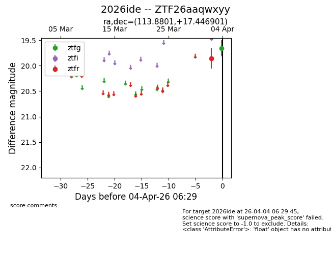
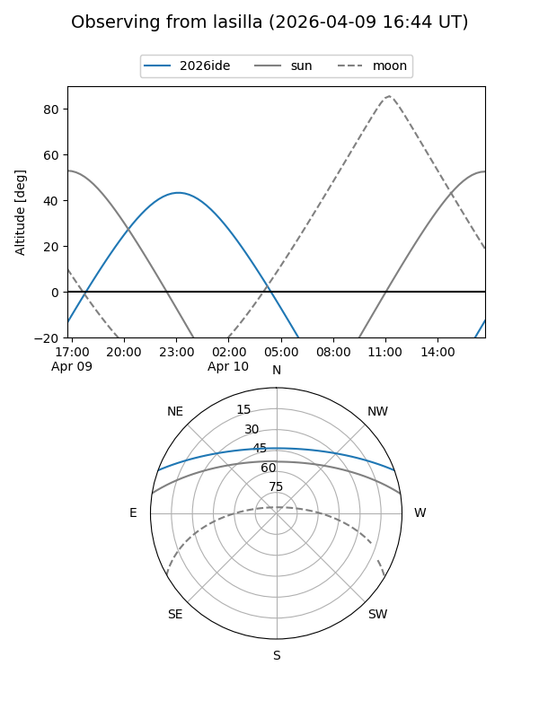
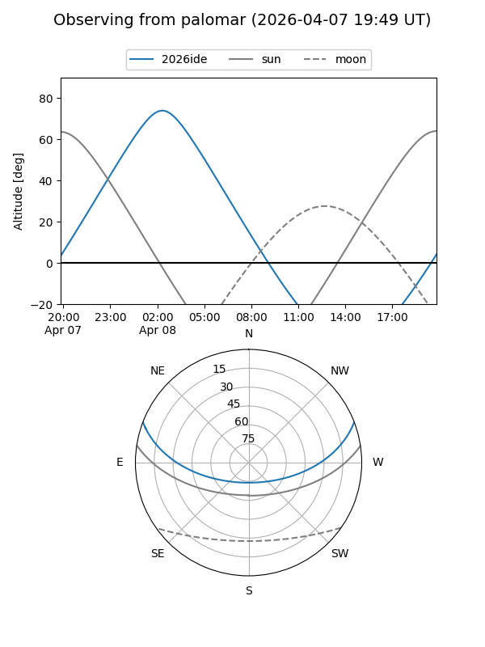
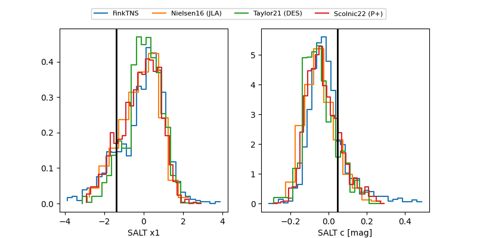

2026ide
Target 2026ide at 2026-04-04 06:33
Aliases and brokers:
FINK: link
Lasair: link
ALeRCE: link
TNS: link
YSE: link
alt names
ZTF26aaqwxyy (ztf,fink_ztf)
2026ide (tns,yse)
Coordinates:
equatorial (ra, dec) = 113.8801,+17.44690
equatorial (HMS+DMS) = 07:35:31.23,+17:26:48.84
galactic (l, b) = (201.8339,+17.39873)
Flags:
Photometry:
last ztfg=19.66, ztfr=19.86
1 ztfg, 1 ztfr detections
Lightcurve

Visibility


Additional plots
